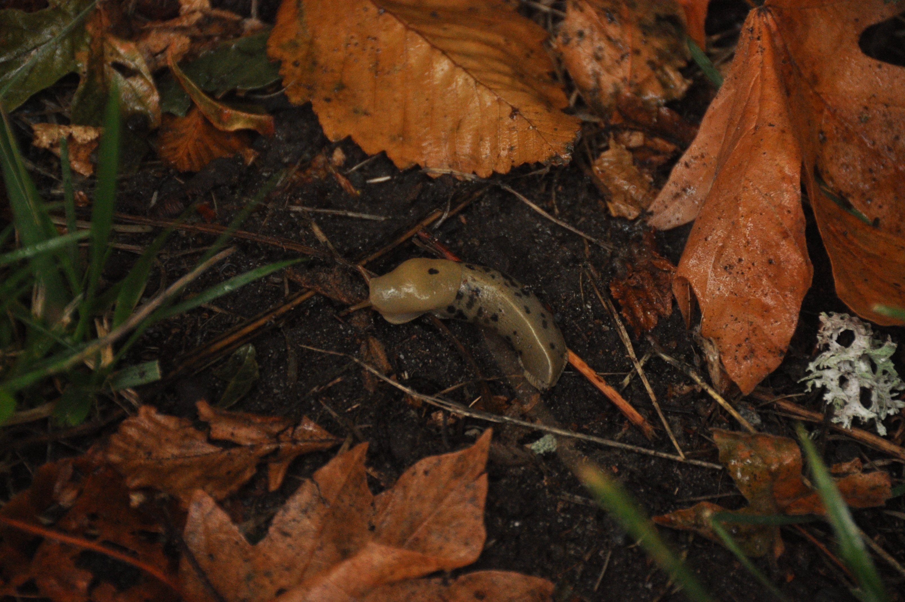

⇓ August Highlights ⇓



Hey, Julius here. Welcome to my photography website.
All photos are my own, taken with my Nikon D90 camera.
This website was created & is maintained by myself.
★ ★
Under Construction
★ ★
⇓ August Highlights ⇓